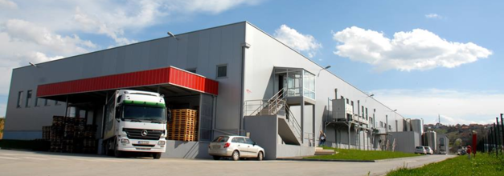

O nama
„Mliječna industrija 99“ d.o.o. je osnovana 2015 godine, kupovinom strateškog udjela od Zott International GmbH,
Mertingen, Njemačka. Osnovna djelatnost naše kompanije je prerada i promet mlijeka i mliječnih prerađevina.
Kompanije je locirana u Gradačcu, u sjeveroistočnom dijelu Bosne i Hercegovine, sa strateškom pozicijom u
blizini granice sa Republikom Hrvatskom i odgovarajućim putnim komunikacijama. Trenutno je u našoj kompaniji
zaposleno 59 mladih i energičnih radnika, od kojih je 12 visokoobrazovanih, sa kontinuiranim rastom broja
zaposlenih. Pored toga, preko 1500 zadovoljnih kooperanata dolaze kao rezultat ozbiljnog i sistemskog rada
i pristupa otkupu sirovog mlijeka. Također, naša kompanije je ponosni vlasnik nekoliko certifikata o kvaliteti
i kontroli menadzmenta, sljedivosti proizvodnje, kontroli kvalitete, te Halal certifikata. Kao rezultat gore
navedenih kompetencija, ponosni smo vlasnik EU licence za izvoz naših proizvoda u zemlje Evropske Unije
Misija
Naša misija je zadovoljan krajnji potrošač, uz zadovoljstvo svih faktora uključenih u isporuku naših proizvoda
do naših kupaca. Naša najbolja referenca je zadovoljan kupac.
Vizija
Vizija naše kompanije je postati lider u segmentu mljekarstva, uz konstantno ulaganje u inovacije i tehnologiju,
da bi se osigurao vrhunski kvalitet proizvoda našeg brenda „Natura“ i „Milkland“.
